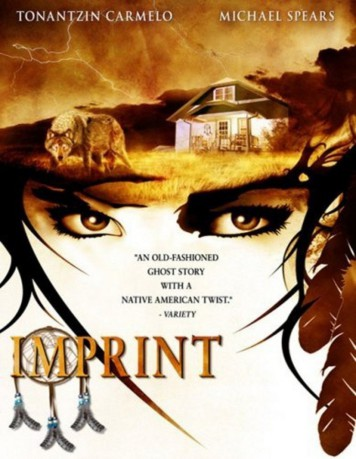

#1795 Imprint
 
 IMDB-Wertung: 5.9 / 10
IMDB-Wertung: 5.9 / 10  Metascore: 0
Metascore: 0 
Japan, 19. Jahrhundert. Nach Jahren kehrt der amerikanische Journalist Billy zurück nach Japan, das er damals auf geheimnisvolle Weise schlagartig verlassen hatte. Er begibt sich auf die Suche nach seiner Geliebten, einer japanischen Prostituierten, die er einst zurückließ. Seine Suche führt ihn auf eine düster karge Insel. Während er nach einer Unterkunft Ausschau hält, begegnet ihm eine mysteriöse Frau, die skurrilerweise genau weiß, was Billy sucht. In bildgewaltigen brutal-blutigen Rückblicken lässt sie Billy am schrecklichen Schicksal seiner Geliebten teilhaben. Doch sie warnt ihn, alte Geister sollte man ruhen lassen.
Jahr: 2007
Dauer: 84 Minuten
FSK: 18
Land: USA Studio: Linn ProductionsTonspuren: DTS - ,
Untertitel:
Auflösung: 1080p (1920x1080) Größe: 5601 MB
Genre: Thriller, Drama
Regisseur: Michael Linn
Drehbuch: Michael Linn, Keith Davenport
Soundtrack: Michael Linn
Darsteller:
- Tonantzin Carmelo als Shayla Stonefeather
- Carla-Rae als Rebecca Stonefeather
 Michael Spears als Tom Greyhorse
Michael Spears als Tom Greyhorse- Tokala Clifford als Nathaniel Stonefeather
- Cory Brusseau als Jonathan Freeman
- Charlie White Buffalo als Sam Stonefeather
- Mark Barnes als Jury Foreman
- Emmanuel Black Bear als Birthday-Party Musician
- Tim Black Bear als Birthday-Party Musician
- Joseph Medicine Blanket als Robbie Whiteshirt
- Pony Boy als Spirit Horse
- Russell Chewey als Frank Whiteshirt
- Jennifer Dowling als Denver 3 Reporter
- Shay Eyre als Young Girl at Party
- Gary Garnette als Lakota Tribal Policeman
- Niels Jeppesen als Defense Attorney
- Beau Little Sky als Lakota Tribal Policeman
- Brandon McBride als Birthday-Party Musician
- Scott Means als Lakota Tribal Policeman
- Juan Mesteth als Birthday-Party Musician
- Alec Morgan als Lakota Tribal Policeman
- Robert Old Horse als Street Person
- Shad Olson als Webcast Reporter
- Paul Weiler als Defense Attorney
Datei: X:\FSK18-2000-2009\Imprint (2007, FSK18, 1920x1080).mkv seit 23.08.2015
Festplatte: FSK18
 Es gibt insgesamt 106 Filme in der Gruppe 'FSK18-2000-2009'
Es gibt insgesamt 106 Filme in der Gruppe 'FSK18-2000-2009'